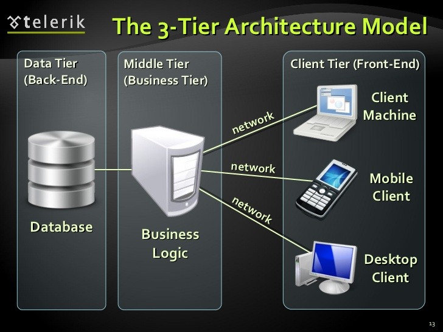
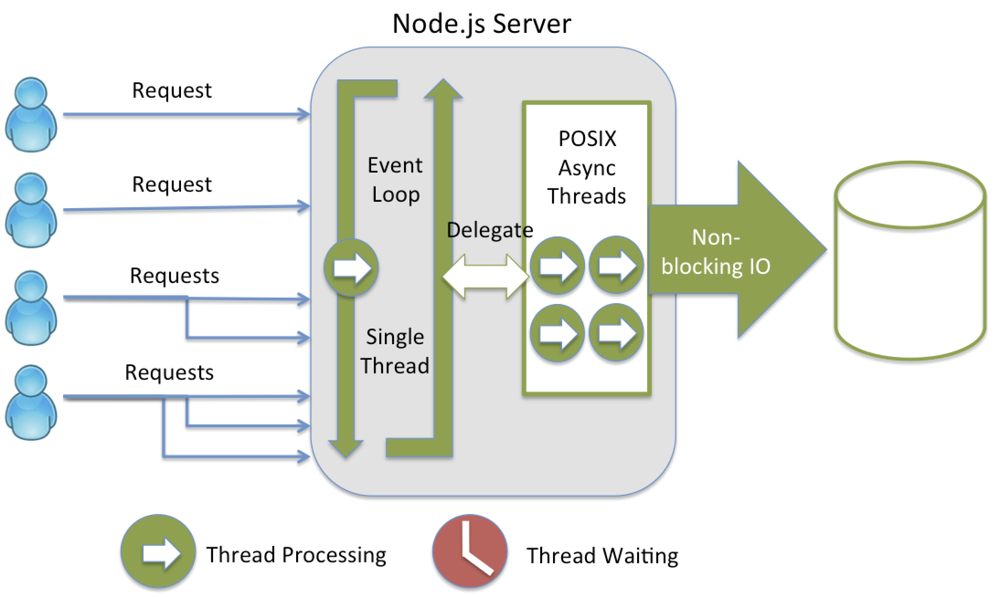

RF Platform Architecture.
A guide for modern day technology developers
Accessibility
Select the theme that suit your environment:
White (default) -
Solarized -
Black -
League -
Sky
Beige -
Simple
Serif -
Blood -
Night -
Moon
“Meaningful architecture is a living, vibrant process of deliberation, design, & decision, not just documentation.”
~ Grady Booch
“First you listen to the users; then you ignore them.”
~ Ken Arnold
Platform Architecture
Platform Components
- Data Store a.k.a Data Layer
- Oracle - ODP.Net
- Future - Data Store agnostic. Think Cloud!
- Application Logic - a.k.a Business Layer
- ASP.Net MVC Web API 2.0
- Future - .Net Core 2.0 or above. Think Linux!
- User Interaction - a.k.a User Interface Layer
- NodeJS 8.x (Terminal Server & UI)
- Future - iOS/Android. Think Mobile!
Design Considerations
- Each tier - designed & architected in isolation.
- Distributed over http/https
- MVC Pattren - UI
- MVC & CQRS (Modified) Pattren - Business
- N Tier - Logical & Physical
- Not a SPA
- Not a classic 3 Tier.
User Interface - Architecture

User Interface - Components
- Terminal User Interface Rendering.
- Telnet Server
- A classic server application & not a UI application.
- Think - Server Side Rendering.
- Implements core MVC design paradigm.
Node.Js Internals
Node.Js/UI - Tools & Techniques
- PM2 - A life saver
- Daemon process for the telnet server.
- inbuild clustering & load balancing.
- Custom metrics & web based monitoring (pm2 web)
- Deepstream - A realtime messenger
- Messaging Server - Utilizes datasync.
- Push Notifications? May be!
- Peer to Peer & Global communication Models.
- Winston - A scavenger
- UI - Logger. Handled & Unhandled exceptions.
- Miniprofiler - Our off-ice official (comming soon!)
- Keep track of instrumented code for its performance.
- Our microscope into the running code.